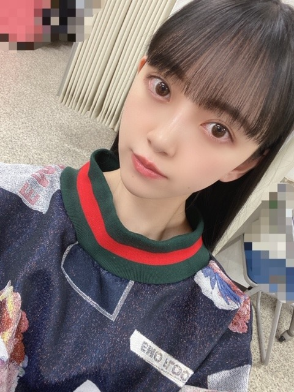

2020/0429Wed空が綺麗です
ぎりぎり、こんにちは
私は
起きてすぐカーテンを開けて
天気を確認します
そして空を見ます
今日の空は凄く綺麗でしたね
夜も窓を開けて
夜風に当たりながらボーっとしてます
ひたすらボーっと

髪色も抜けてきてすっかり茶色ですし
早くトリートメントとカラーをしに
美容院へ行きたいです
あとずっと食べてしまってます...
気をつけないと
最近は餃子と生ハムにハマってます
あと炭水化物も好きなので困ってます
野菜中心生活にまた戻さなきゃ
頑張ります
ᕦ(ò_óˇ)ᕤ


ロングが好きって言ってくださる方もいて
嬉しかったです!
いつかまたやれたらいいな
でもいまはショートボブが気に入ってます☺︎


ギリギリ結べる長さなんだっ
写真集についてのお知らせ、
また近々出ると思います!
新しい企画も用意しているので
公式Twitter
@horimiona2nd
公式Instagram
@horimiona_2nd
のほうをチェックお願いします☺︎
公式Twitterの方は
信頼おける写真集チームのスタッフさんに
全てお任せしていて
公式Instagramの方はストーリーや投稿を
私自身でやらせていただいています!
発売まで1か月を切りましたが
たくさんの方に楽しんでいただけたらいいなぁ✨
乃木坂46の堀未央奈として
自信を持ってみなさんに見ていただけるような
素敵な一冊となっていますので
5月27日まで、お楽しみに☺︎
ポスターやポストカードも
店舗ごとに違うので要チェックです♩
じゃあねっ
2020/04/29 16:30
コメント(448)
写真集楽しみすぎるーーー！
写真集発売されたらもう未央奈さんのストーリーとか見れないってことならないですよね？？そうなったらとても悲しい！
でははは
写真集発売されたらもう未央奈さんのストーリーとか見れないってことならないですよね？？そうなったらとても悲しい！
でははは
未央奈かわいい❤️
ロングもショートボブも全部かわよい！
センス良すぎ。
今度、私をコーディネートして欲しいです！！！
ロングもショートボブも全部かわよい！
センス良すぎ。
今度、私をコーディネートして欲しいです！！！
未央奈ブログ更新ありがとう！最近ずっと家にいるせいかなんでも食べてしまうのわかります(笑) 気をつけないと❗写真集楽しみ～絶対買います！！
生ハムにハマってるなら、オススメしたいレシピがある！！
「生ハムのユッケ風」ってやつで、生ハムときゅうりを千切りしたところに、コチュジャンと韓国海苔で味付けするだけ！お好みでネギも添えたら、めちゃくちゃ美味しいよ！
ぜひやってみて！！！
「生ハムのユッケ風」ってやつで、生ハムときゅうりを千切りしたところに、コチュジャンと韓国海苔で味付けするだけ！お好みでネギも添えたら、めちゃくちゃ美味しいよ！
ぜひやってみて！！！
遅いけど
俺が好きな曲は
ユアソング/エルトン・ジョン
アイ・ドント・ケア/エド・シーラン&ジャスティン・ビーバーが好き
俺が好きな曲は
ユアソング/エルトン・ジョン
アイ・ドント・ケア/エド・シーラン&ジャスティン・ビーバーが好き
ブログ更新有難う。！
早めにみれた！
明日いい事ありそう！
もちこ
早めにみれた！
明日いい事ありそう！
もちこ
ブログありがとうございます！
インスタみました！写真集楽しみです☺️
どんな髪型の未央奈ちゃんもすごく可愛いです
体調に気をつけて頑張ってください❗️
インスタみました！写真集楽しみです☺️
どんな髪型の未央奈ちゃんもすごく可愛いです
体調に気をつけて頑張ってください❗️
未央奈ちゃん〜〜やあやあ！^._.^♡♡
野菜中心の生活、わたしもダイエットのために頑張る〜！
未央奈ちゃんと言ったら餃子のイメージあります！
好きだよね〜〜 ♡♡
♡♡
ロングもショートも未央奈ちゃんは未央奈ちゃんなので全部全部大好きです^._.^♡♡
写真集楽しみだなあ〜〜
「 乃木坂46の堀未央奈として
自信を持ってみなさんに見ていただけるような
素敵な一冊となっていますので
5月27日まで、お楽しみに☺︎ 」
この言葉でもっともっと楽しみになりました！
はやく感想伝えた〜い！
野菜中心の生活、わたしもダイエットのために頑張る〜！
未央奈ちゃんと言ったら餃子のイメージあります！
好きだよね〜〜
ロングもショートも未央奈ちゃんは未央奈ちゃんなので全部全部大好きです^._.^♡♡
写真集楽しみだなあ〜〜
「 乃木坂46の堀未央奈として
自信を持ってみなさんに見ていただけるような
素敵な一冊となっていますので
5月27日まで、お楽しみに☺︎ 」
この言葉でもっともっと楽しみになりました！
はやく感想伝えた〜い！
家にずっといると、今までと違う
食の趣味とかになったりするよね
私は、相変わらず うどんしか愛してない笑
食の趣味とかになったりするよね
私は、相変わらず うどんしか愛してない笑
肉とかじゃないタンパク質系を積極的に摂ってね。写真集のポストカード全種類欲しいけどお金がもたないので困ったもんだ。
堀さん、こんにちは（こちらもぎりぎり 笑）。
今日は朝からいい天気。気温も少しずつ上がってきました。これからの陽気と太陽の光と暖かさが、僕らの許に幸せと健康を運んでくれるよう願っています。
風も気持ちよく吹いています。換気の意味もこめて窓を開けました。昼間の風も夜風も心地よい季節ですね。
堀さんの2nd写真集発売まで一ヶ月をきりました。その日が一日一日近づいてくるのを楽しみにしています。わくわく。
ではまたコメントします。今日もお疲れさまでした。
さらばだ、また会おう！（気球に乗って去りぬ〜）
今日は朝からいい天気。気温も少しずつ上がってきました。これからの陽気と太陽の光と暖かさが、僕らの許に幸せと健康を運んでくれるよう願っています。
風も気持ちよく吹いています。換気の意味もこめて窓を開けました。昼間の風も夜風も心地よい季節ですね。
堀さんの2nd写真集発売まで一ヶ月をきりました。その日が一日一日近づいてくるのを楽しみにしています。わくわく。
ではまたコメントします。今日もお疲れさまでした。
さらばだ、また会おう！（気球に乗って去りぬ〜）
未央奈ちゃん、ブログ更新ありがとう！
自分はショートの方が似合ってるよ！
早く握手会で会いたい…
写真集楽しみ!!
またね！
自分はショートの方が似合ってるよ！
早く握手会で会いたい…
写真集楽しみ!!
またね！
もう、私生活にも怠けが出てきて太ってないか自分も心配やわ。(゜Д゜)
気をつけましょ。
気をつけましょ。
写真集楽しみだな〜！
未央奈ちゃんの美を追求する姿勢には尊敬できる。
じゃあね
優太
未央奈ちゃんの美を追求する姿勢には尊敬できる。
じゃあね
優太
ミディアムがいちばん好きです☺️♡
超絶可愛い未央奈。
最近は生活習慣乱れちゃいますよね。この状況が終息したら、握手会やライブ楽しみたいです！
ブログ更新ありがとう！
写真集のお知らせ楽しみ！
俺もついついお菓子食べ過ぎてしまって困ってる！笑
写真集のお知らせ楽しみ！
俺もついついお菓子食べ過ぎてしまって困ってる！笑
初コメです。今日誕生日でした。いつも未央奈さんのブログを見て元気をもらっています。なのでこれからもブログを更新してもらえると嬉しいです ずっと応援しています！
更新ありがとう!!!茶色も綺麗です！
餃子美味しいですよね！！お洋服もオシャレ✨
ロングが好きだけど、今の髪型も大好き！！！！！
どんな髪型も似合う！！☺️
TwitterもInstagramもフォローしてます！！
写真集楽しみ ✨
餃子美味しいですよね！！お洋服もオシャレ✨
ロングが好きだけど、今の髪型も大好き！！！！！
どんな髪型も似合う！！☺️
TwitterもInstagramもフォローしてます！！
写真集楽しみ ✨
堀未央奈❤こんにちは❗昨日のブログ送ったのに上がってないよ(T_T)今日は、天気良すぎて暑いよね。家に居る時はずっと食べたりして太らないように気を付けてね。ちゃんと野菜も食べるんだよ(^-^)v俺は、未央奈の髪型は、ボブの方が好きだよ(*^^*)写真集楽しみだよ(^-^)v早く５月27日来ないかな(^_^)vこれからも体調に気を付けてね(^o^)v今日も可愛いね(*^_^*)愛してる ♥❤
ショートカットのボブが似合ってるよ
ブログ更新ありがとう〜〜(*¨*)♡
毎日更新してくれて嬉しいです。無理しなくて良いからね(；＿；)
今日はYouTube見て少し英語の単語勉強して、数Ⅱやってって感じでダラダラしてました( ˊᵕˋ ;)
もう高2なのになぁ〜
集中力付ける方法教えて欲しいな〜〜〜〜〜
毎日更新してくれて嬉しいです。無理しなくて良いからね(；＿；)
今日はYouTube見て少し英語の単語勉強して、数Ⅱやってって感じでダラダラしてました( ˊᵕˋ ;)
もう高2なのになぁ〜
集中力付ける方法教えて欲しいな〜〜〜〜〜
ブログ更新ありがとう；＿；❤︎
写真集待ちきれません！楽しみです〜 ♡
写真集待ちきれません！楽しみです〜 ♡
更新ありがとう！
最近乃木坂の曲のカラオケバージョンを聴くのにハマってます！
声ありはもちろん良いけど、メロディも素敵です！！
ちなみに私が好きなのはシンクロニシティと僕のこと、知ってる？です！！
みおなちゃんは乃木坂で好きなメロディとかありますか？！笑
最近乃木坂の曲のカラオケバージョンを聴くのにハマってます！
声ありはもちろん良いけど、メロディも素敵です！！
ちなみに私が好きなのはシンクロニシティと僕のこと、知ってる？です！！
みおなちゃんは乃木坂で好きなメロディとかありますか？！笑
更新ありがとうございます！
写真集とっても楽しみです！！
写真集とっても楽しみです！！
コロナに気をつけてください。 ブログ更新ありがとうございます。
未央奈ちゃんこんばんは‼ありがとうございます！楽しみにしてます‼写真集楽しみにしてます！頑張ります‼気をつけて下さい。頑張ります‼
こんにちは！
今日の空綺麗でしたね！写真撮っちゃいました！
未央奈ちゃんは、ロングでもショートボブでもなんでも似合います❣️
体調に気を付けてください！
今日の空綺麗でしたね！写真撮っちゃいました！
未央奈ちゃんは、ロングでもショートボブでもなんでも似合います❣️
体調に気を付けてください！
小まめなブログの更新ありがとうございます！
いつも元気を貰ってます。
私は、仕事柄一切休みを取れず昼夜外を走り回ってます。コロナに対する恐怖や不安は強いですがブログを見て頑張ってます！今は自由に外に出られず大変だと思いますが未央奈さんの事、ずーっと応援してます。
いつも元気を貰ってます。
私は、仕事柄一切休みを取れず昼夜外を走り回ってます。コロナに対する恐怖や不安は強いですがブログを見て頑張ってます！今は自由に外に出られず大変だと思いますが未央奈さんの事、ずーっと応援してます。
ブログ更新ありがとう!
今日もブログありがとうございます！
本当に未央奈ちゃん可愛い
最近乃木坂工事中でもずっと未央奈ちゃん見てます
綺麗な空ですね
なかなか野菜中心の生活は意識しないと難しいね
26日のブログで紹介してくれた「エスケープ」( 手嶋葵さん)聴きました
希望の持てるいい歌ですね！
これからも未央奈ちゃんの紹介してくれた曲たくさん聴きますね
本当に未央奈ちゃん可愛い
最近乃木坂工事中でもずっと未央奈ちゃん見てます
綺麗な空ですね
なかなか野菜中心の生活は意識しないと難しいね
26日のブログで紹介してくれた「エスケープ」( 手嶋葵さん)聴きました
希望の持てるいい歌ですね！
これからも未央奈ちゃんの紹介してくれた曲たくさん聴きますね
未央奈ちゃんかわいい✨
写真集、絶対買うね！
5月27日が楽しみだな‼
大好きだよ
写真集、絶対買うね！
5月27日が楽しみだな‼
大好きだよ
ブログ更新ありがとう
ショートもロングも好きだけどカチューシャつけてる未央奈個人的にめっちゃ好き！似合いすぎ٩(*´︶`*)۶
その(たぶん)bodysongの服いいなぁ〜ほしい(笑)
1つ聞きたいことあるんやけど…
お風呂上がりのドライヤーってどんな感じでしていますか？
ざっくりでもいいので教えて欲しいな
今日はこの辺で〜
バイバイ(^_^)/~~
ショートもロングも好きだけどカチューシャつけてる未央奈個人的にめっちゃ好き！似合いすぎ٩(*´︶`*)۶
その(たぶん)bodysongの服いいなぁ〜ほしい(笑)
1つ聞きたいことあるんやけど…
お風呂上がりのドライヤーってどんな感じでしていますか？
ざっくりでもいいので教えて欲しいな
今日はこの辺で〜
バイバイ(^_^)/~~
ショート派！
どっちも可愛いけどね
おめめが綺麗ね未央奈ちゃんは
自分も美容院いきたいんだ〜
コロナがおさまるといいね、、。
次も楽しみにしてます*°♡
どっちも可愛いけどね
おめめが綺麗ね未央奈ちゃんは
自分も美容院いきたいんだ〜
コロナがおさまるといいね、、。
次も楽しみにしてます*°♡
未央ちゃんブログ更新有り難うございます。写真集楽しみにしています。未央ちゃん応援してます。
髪短い方が好き。
今の未央奈が好き。
明日も未央奈が好き。
今の未央奈が好き。
明日も未央奈が好き。
ブログ読むことがホント楽しみです！めっちゃ美人！写真集も楽しみです！リスペクト
未央奈ちゃんブログ更新ありがとう！
最近はあったかくて晴れててぽかぽかしてる！って感じの天気が続いててお家にいても気分が上がります！
未央奈ちゃんの生写真とかfirst写真集みたりして気分上げて受験勉強がんばってます！
写真集発売もアップトゥボーイもたのしみです！しっかりセブンネットで予約しました！！
未央奈ちゃんの横顔も素敵だし、ふわっと巻いてる前髪綺麗でほんとにすごいです❤︎
たくさん更新してくれてありがとうございます！
最近はあったかくて晴れててぽかぽかしてる！って感じの天気が続いててお家にいても気分が上がります！
未央奈ちゃんの生写真とかfirst写真集みたりして気分上げて受験勉強がんばってます！
写真集発売もアップトゥボーイもたのしみです！しっかりセブンネットで予約しました！！
未央奈ちゃんの横顔も素敵だし、ふわっと巻いてる前髪綺麗でほんとにすごいです❤︎
たくさん更新してくれてありがとうございます！
ブログ更新ありがとうございます！！！
ボブのほりちゃんかわいい
写真集楽しみすぎ
ボブのほりちゃんかわいい
写真集楽しみすぎ
未央奈ちゃん、更新ありがとうございます！
インスタ、毎日見てるよ！頻繁な投稿がすんごく嬉しいです！もちろん、時間がある時で大丈夫です！
質問です。乃木坂の好きなところはどこですか？
たくさん聞かれたこともあると思うけど答えてくれると嬉しいです！
大好きです。これからも応援してます！
インスタ、毎日見てるよ！頻繁な投稿がすんごく嬉しいです！もちろん、時間がある時で大丈夫です！
質問です。乃木坂の好きなところはどこですか？
たくさん聞かれたこともあると思うけど答えてくれると嬉しいです！
大好きです。これからも応援してます！
未央奈ちゃんお元気ですか？
現在大変な事態となっていますが未央奈ちゃんは大丈夫ですか？
コロナ気をつけて下さいね
乃木坂工事中のことで新4期生のはやしるなちゃんにいきなり指名を受けてやったライス下さいは最高のお手本でした。
何事にも一生懸命な未央奈ちゃんを観れた気がします。
本当、新4期生も入って未央奈ちゃんもかなりベテランになってきたから急に振られる事があってもしっかりやりきって下さいね
白石さんの卒業ライブも中止になって少し長くいてくれるから未央奈ちゃん白石さんから色々教わるチャンスだから頑張ってね！
現在大変な事態となっていますが未央奈ちゃんは大丈夫ですか？
コロナ気をつけて下さいね
乃木坂工事中のことで新4期生のはやしるなちゃんにいきなり指名を受けてやったライス下さいは最高のお手本でした。
何事にも一生懸命な未央奈ちゃんを観れた気がします。
本当、新4期生も入って未央奈ちゃんもかなりベテランになってきたから急に振られる事があってもしっかりやりきって下さいね
白石さんの卒業ライブも中止になって少し長くいてくれるから未央奈ちゃん白石さんから色々教わるチャンスだから頑張ってね！
ボブ似合いすぎ〜！
可愛いです！
可愛いです！
ブログ更新ありがとう
食べるの好きやとすぐ食べてしまうよね
朝の日差しが気持ち良くて好きです
次のブログも楽しみにしてます
食べるの好きやとすぐ食べてしまうよね
朝の日差しが気持ち良くて好きです
次のブログも楽しみにしてます
ブログ更新ありがとうございます！
空を眺めるのっていいですよね
私もよく見ていますが、何と言うのでしょう、昼と夜の狭間みたいな空（表現するのは難しいのですが、夕日が沈みかけて空の色が赤とかオレンジとか紫とか青とか色々な色が混じりあっている空）が好きです！
写真集楽しみです！
コロナに気を付けてお過ごし下さい
空を眺めるのっていいですよね
私もよく見ていますが、何と言うのでしょう、昼と夜の狭間みたいな空（表現するのは難しいのですが、夕日が沈みかけて空の色が赤とかオレンジとか紫とか青とか色々な色が混じりあっている空）が好きです！
写真集楽しみです！
コロナに気を付けてお過ごし下さい
ブログ更新あざます！
自分は朝起きたら庭で犬と遊んでます！
少しでも日光に当たりたいと思って動いてます！
写真集発売までやっと1か月切ったー！！
楽しみすぎて待ちきれへんわー
あと野菜中心の生活してら時の食事メニューはどんな感じですか？自分も参考にさせてください！
自分にストイックな未央奈が大好きです！
コロナに気をつけて過ごしてください。
またブログや755等更新楽しみにしてます！
自分は朝起きたら庭で犬と遊んでます！
少しでも日光に当たりたいと思って動いてます！
写真集発売までやっと1か月切ったー！！
楽しみすぎて待ちきれへんわー
あと野菜中心の生活してら時の食事メニューはどんな感じですか？自分も参考にさせてください！
自分にストイックな未央奈が大好きです！
コロナに気をつけて過ごしてください。
またブログや755等更新楽しみにしてます！
未央奈ちゃん、ブログ更新ありがとう!!!
横顔美しすぎる！！
可愛い可愛い( ∀ )
茶色似合うねー!!!
私も前髪とかきりに美容院いきたいーー！
改めて日常の大切さに気付かされるよね！
インスタもTwitterもチェックしてるよ！
写真集楽しみ
今日も大好きです！！
横顔美しすぎる！！
可愛い可愛い( ∀ )
茶色似合うねー!!!
私も前髪とかきりに美容院いきたいーー！
改めて日常の大切さに気付かされるよね！
インスタもTwitterもチェックしてるよ！
写真集楽しみ
今日も大好きです！！
チャァオ～～!☆彡
プリンセスみおちゃん❕❤️❤️❤️❤️❤️笑顔❇️❇️❇️笑顔❇️❇️❇️
写メ、めちゃめちゃ～うんと～～～可愛いぃ～～よぉ～～～⤴️⤴️⤴️❕❤️❤️❤️❤️❤️笑顔❇️❇️❇️笑顔❇️❇️❇️
本当に、可愛いぃ～～～⤴️⤴️⤴️❕❤️❤️❤️❤️❤️笑顔❇️❇️❇️笑顔❇️❇️❇️
おいらは、今日も仕事で
２日連続目覚まし時計に負けて、
(いつもは、目覚まし時計4時20分より10分早く起きます❕)
２日連続お昼休み、職場の休憩室の畳部屋で寝落ちしそうになりました～～⤴️⤴️⤴️❕笑
深い眠り寸前で、危なかったです❕笑
それでは、可愛いぃ～～可愛いぃ～～⤴️⤴️
みおちゃん、またねぇ～～⤴️⤴️❕❤️❤️❤️❤️❤️❇️❇️❇️笑顔
(明日木曜日は、確かぁ休みです、日曜日も❕笑顔)
❇️❇️おすまし！⚜️❇️彡
みおな好き❕今日熱がでて大変だった。
今は治ったよ
今は治ったよ


自分はボブの方が好きです！
自分も食べすぎて部活やってた時より少しぽっちゃりになっちゃいました笑笑
写真集の色々な情報が知れてうれしい！
ブログ更新ありがとう！